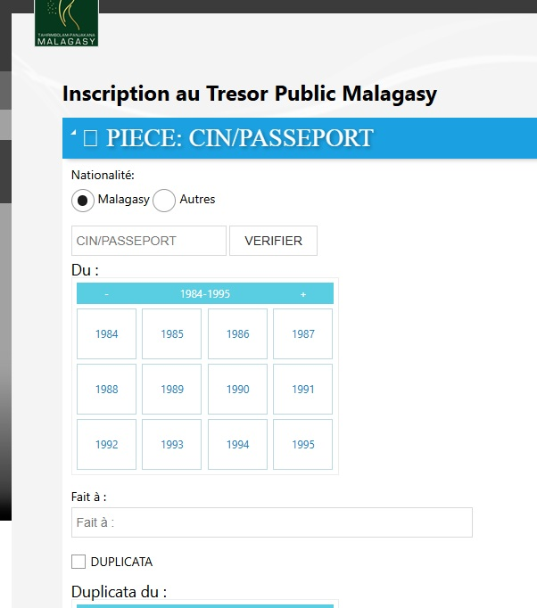
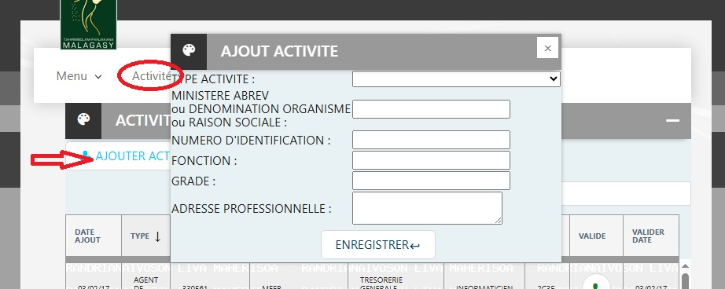
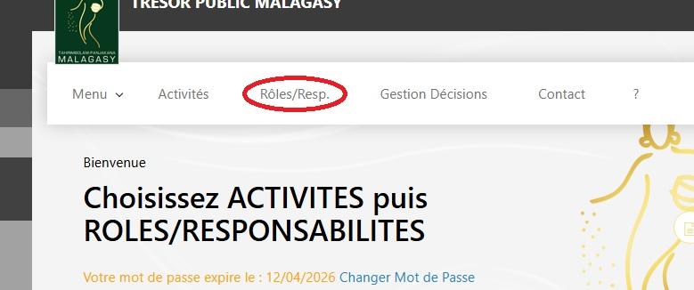
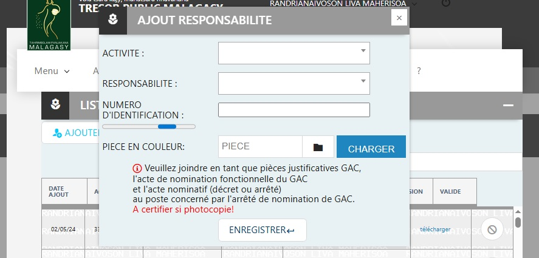
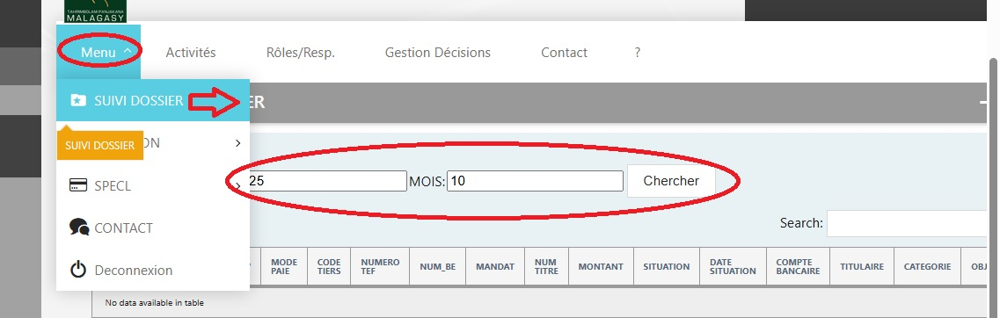
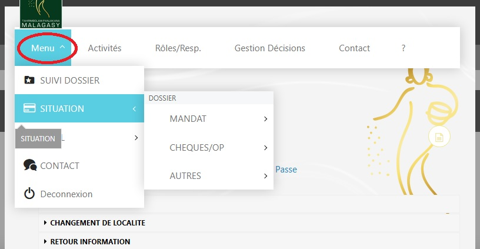

Pièces à fournir pour un retrait à la caisse (DERNIERS ARRÉRÉS) :
- Acte de décès
- Acte de notoriété
- Copie légalisée de la CIN de tous les héritiers
- (procuration et certificat de vie requis si un héritier est absent)
Pièces à fournir pour un retrait à la caisse (PENSION OU SOLDE):
- Titre pension ou Bon de caisse
- Carte d'identité Nationale (CIN)
- (Présence obligatoire lors du paiement)
Documents à fournir : Porte 07
- Photocopie CIN (légalisé)
- Bulletin de pension
- Certificat de vie (moins de 3 mois)
- Un formulaire est à remplir (Changement de localité ou Changement d'assignation)
Récupération Avis de Crédit - Porte 07
Documents à fournir :
- La CIN (Carte d'Identité Nationale)
- La carte de pension
Documents à fournir :
- Dépôt d'un certificat de vie tous les trois mois, en présence physique du bénéficiaire.
- (Fin Février, Fin Mai, Fin Août, Fin Novembre)
Suivi de votre dossier
Pour suivre l'état de votre dossier en ligne :
- Accédez au site https://app.tresorpublic.mg:12000/info
- Saisissez votre identifiant (login)
- Allez dans le menu
- Sélectionnez « SUIVI DOSSIER »
Documents requis pour la Caisse d'Avance (à partir de la 2e avance) :
- Bordereau d'Ordre de Paiement (BOP) signé par ORDSEC 2 ex
- Ordre de Paiement (OP) signé par ORDSEC 2 ex
- Avis de crédit (AC) signé par ORDSEC 1 ex
- Photocopie TEF comptable certifiée par ORDSEC 1 ex
- Demande d'Avance de Fonds (DAF) signé par ORDSEC et le Régisseur 2 ex
- • Et visé par CF si montant est supérieur à 2.500.000 Ar
- • Sans visa du CF si CHED [Eau et électricité, téléphone, internet, frais de déplacement (vol aérien, billet d'une agence de voyage)] et pour les autres comptes dont le montant est inférieur ou égal à 2.500.000 Ar mais avec double signature de l'Ordsec.
- Certificat d'Engagement (CE) signé par ORDSEC 2 ex
- Copie certifiée par ORDSEC de tous les Arrêtés :
- • Création de régie d'Avance 1 ex
- • Nomination du Régisseur 1 ex
- • Mise en place de fonds pour MDG et MFA 1 ex
- Dernier Quitus (copie certifiée par le Payeur Général ou Fondé de pouvoirs) 1 ex
et/ou certificat de non régisseur signé par l'Ordsec.
(sans Quitus à partir de la 3e avance) - Etat d'emploi paraphé par le Fondé de Pouvoirs de la dernière régularisation 1 ex
Documents à fournir pour la Demande de Quittus :
- 1. Etat d'Emploi récapitulé, signé par l'ORDSEC et le Régisseur 2 ex
(en date du 31 Décembre 202x) mentionnant :
- • Code Régisseur
- • Code SOA et imputation budgétaire
- • Nature de la dépense
- • Montant et référence du mandatement de la régularisation
- (s'il y a IMP, séparez les montants de l'IMP 8% et le 92%)
- • Total des montants (OP-Régularisation-Reste)
- • Référence de la quittance de reversement reliquat
- 2. Photocopie certifiée à la PGA de la Quittance de versement (reliquat/IMP) 1 ex
- 3. Photocopie certifiée par l'Ordsec de tous les Arrêtés (création, nomination, mise en place) 1 ex
- 4. Etat d'emploi paraphé par le Fondé de Pouvoirs de la dernière régularisation 1 ex
Motif : Rejet de virement (salaire / pension / facture)
Pièces à fournir :
- Avis de crédit
- Relevé d'Identité Bancaire (RIB)
- Photocopie de la Carte d'Identité Nationale (CIN) dûment légalisée
- Certificat administratif
Procédure :
La PGA délivrera un acte de renseignement à déposer auprès de la SONACO.
Après dépôt et traitement du dossier, celui-ci devra être retourné à la PGA en vue de la reprise de l'opération de virement bancaire.
VERSEMENT DES COTISATIONS SUITE À LA VALIDATION DE SERVICES
Un (1) exemplaire Original et trois (3) exemplaires de la photocopie Certifiée de :
- - L'Avis d'Émission d'Ordre de recette
- - L'Ordre de recette
- - L'État de décompte
Les Photocopies sont à certifier auprès du Service de la Validation des Services Précaires
(DIRECTION DE LA SOLDE ET DES PENSIONS)
VERSEMENT DES DROITS DE DÉLIVRANCE DE VISA DE SÉJOUR ET DE CARTE DE RÉSIDENT
- Lettre de Notification originale avec la Signature et le Cachet rouge du MINISTERE DE L'INTERIEUR ET DE LA DECENTRALISATION (MID)
- État de Décompte du Droit de visa et de la Carte de Séjour Original
- Passeport du Propriétaire
- CIN ou PASSEPORT du Déclarant
- Lettre de Procuration au Déclarant pour plus de 2 personnes sauf si pour des personnes de la même famille
En cas de Paiement par Virement Bancaire :
- - Copie de l'Ordre de Virement
- - Copie de l'Avis de Débit
- - Copie de l'Etat décadaire fourni par le MID (Paiement en Euro)
En cas de Paiement par Chèque :
Le Chèque de Banque est le seul accepté.
VERSEMENT DES DROITS DE PASSEPORT
- Avis de Paiement venant du MINISTERE DE LA SECURITE PUBLIQUE (MSP)
- CIN ou PASSEPORT du PROPRIÉTAIRE (PHOTOCOPIE ou ORIGINALE)
- Si Enfant/Mineur : Photocopie de l'Acte de Naissance
- CIN ou PASSEPORT du DÉCLARANT
VERSEMENT RESTE CAISSE D'AVANCES
- Photocopie de l'OP Certifié par l'ORDSEC
- Bordereau d'Emploi de Fonds d'Avances signé par L'ORDSEC et le Régisseur
- Fiche de recette à retirer auprès de la porte 109 PGA
VERSEMENT IMPÔT SUR LES MARCHÉS PUBLICS (IMP 8%)
- Photocopie de l'OP Certifiée par l'ORDSEC
- État de Décompte de l'IMP 8% signé par l'ORDSEC
- État de retenue de l'IMP 8% signé par l'ORDSEC
- Fiche de recette à retirer auprès de la porte 109 PGA
VERSEMENT SUR SOLDE ET INDEMNITÉ
- Ordre de Recette signé par l'ORDSEC, avec le motif de Reversement Bien défini
- État de Reversement signé par le Billeteur
- État émargé Original et Photocopie certifiée par l'ORDSEC
- Photocopie du Bulletin de Solde si Reversement sur Solde
Inscription Portail
Cliquez sur https://app.tresorpublic.mg:12000/info/inscription_info.php
- Remplir le formulaire, puis attendre la validation de l'inscription. Entre-temps, vous recevrez un e-mail

Ajout d'Activité
Cliquez sur https://app.tresorpublic.mg:12000/info/, puis procédez à l'authentification.

Ajout Rôle
Cliquez sur https://app.tresorpublic.mg:12000/info/, puis procédez à l'authentification.


Suivi Dossier
Cliquez sur https://app.tresorpublic.mg:12000/info/, puis procédez à l'authentification.

Consultation des Situations
Cliquez sur https://app.tresorpublic.mg:12000/info/, puis procédez à l'authentification.
